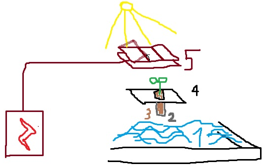

AfriAgri - artificial agriculture to grow certain crops indep. of weather conditions

1: Water container. Needs to be a light, water-retaining, highly elastic material (so it can be transported as small chunks and then stretched around the corners to form a container shape). The water's weight also shouldn't bend it down (=it needs to be very solid when stretched).
2: Osmotic membrane. Allows water to enter the soil, but doesn't let soil dissolve into the water. Should be very thin, elastic and bendable.
3. Soil. Thin layer of a concentrated mineral mix, tested out to fit a certain crop's needs (so the osmotic flow of water & minerals through the roots is similar to that of a plant in its natural soil). So, we'll need a soil profile for each crop, means of acquiring the minerals cheaply included.
4. Motherboard. Its only point is holding the membrane envelopes with the plants, so it is a grid. It should be divided into segments with joints in one direction, so we can fold the segments together (into a vertical position) and the plant envelopes get a lot closer, forming a line, which is easy to work with/reseed.
5. Energy draft. A shelter, forming the walls and roof. Should transform heat - needn't be effective, but must lead all the energy away from the protected area under its bottom layer. If there was a simple way to gather the energy from it (like electricity), that would be amazing...
Just need a huge chargeable powerbank to carry around anywhere, with a socket to plug in things (like you do at home)
Equipment to project large images onto a banner in night sky, visible from afar (8km)
This tool will be used to project messages to people (eg. during war or turmoil)
in an epic fashion. Only works at night, but still will certainly have a large
impact on our relations in the region.
a very thin light material that can be bent sharply like paper (so we could transport it compact) and reflects light (probably will just use black paper).
two balloons to lift/pull the paper on the sides (small are enough, lifting paper against still Sahel air isn't hard), we will hold it by ropes at bottom (yes, a stick to hold the paper above would be simpler, but if we put it like 1km above ground, inventing and assembling a 1km stick gets kind of complicated, while a 1km rope is imaginable)
extremely bright light (needn't be a projector, just a light, we'll just let it shine through a negative of the image) - Sahel air is dry, so won't have much issue shining 1km through it, but still...
Tools & technique to model the sand (so you can dig in it easily and stick it together to form solid walls / tunnels / rooms)
Sneaky tool you can setup somewhere to track and snipe violent "terrorists"...
CONTRIBUTE
Your knowledge might be valuable for us, check our offers here
Criticize the project via e-mail, show no mercy
Mail (fill if you want a response):
Title:
Message:
Send
Agreed upon by generals of Czech republic, emergency meeting 23.10.2023
May the peace, mercy and blessings of God be upon you.
Dear leaders of Iran,
as war sentiment rises on both sides of the Gaza conflict, many have raised concerns in Europe
and we need to declare our stance on the crisis. Given our plans, we are likely to meet Iran
many more times. So, our mutual stance today matters for the future.
It is hard to tell, but we see Hamas and Hezbollah as brothers of Iran. You are prominent
supporters of such movements in the region. Iran might not have direct oversight or control,
but you certainly back the jihad-like sentiment they live by.
So, we expect that Hamas and Hezbollah keep Iran's decisions in mind, even amidst raging war.
Practically, you are head of the anti-Israeli mission.
To be continued
Agreed upon by generals of Czech republic, emergency meeting 23.10.2023 To be continued
Transport
We claim no expertise on transport, this is merely an example of
"profit-driven market directed by ministries to keep it simple and useful".
This sector ensures:
1. readiness to evacuate a large amount of people or deliver them supplies quickly (any place in the country)
2. cheap slow transport for masses of material or goods across large distances (horse-powered chariots are literally enough)
3. a small operational force of (probably) helicopters for emergency or quick transport of urgent passengers
4. affordable transport of people to work will be profitable in just very few places across the country. So, routine passenger transport is just taxi for rich businessmen.
5. observes the places it travels and brings interesting / concerning news first-hand
The government will promote a company that enhances their normal work (2. and 4.) to fulfill 5.
Companies for 1. and 3. will get rewards from the ministry directly:
1. for
total weight (worth of people) evacuable per hour, given distance is 100km or more
maintaining bases with water / electricity in remote locations, so every place is within 100km of the needed supplies
3. for
Proving to be ready and reachable at any time
Maintaining small secret bases near political residences and quick access to them. This lets them move quickly without people knowing.
In Africa, a large part of solving poverty (and hunger) is preventing stealing and violence.
So, we will ask local communities to name one person responsible for dividing food supplies among them.
The person needs to be a force and a safekeeper in their community and speak Arabic or English on their behalf.
This person will receive our AfriAgri starter pack (see below).
They will distribute free food, so no profit involved. Instead, their incentive to improve is to support community life:
If the community gains recognition in the region, be it through organizing events or watching over the safety of the land, the AfriAgri leader can get promoted.
Proven as sensible leaders / mediators, they will become
heads of prestigious schools, judges or council chairmen. This brings intuitive
justice and relationships into politics, which is what we embrace.
Fun fact: Model of agriculture in dry, desolate land
A light, simple-to-build, scalable construction that can produce certain crops (and protect from heat/drought)
1. Water container. Should be of highly elastic material so it can be
transported small & shapeless, stretched out and wrapped around the corners to form a large monolithic insulation (and hold water in it). 2. Osmotic membrane. Allows water to pour into the soil, but holds the soil from dissolving into the water. The membrane should cover the whole floor (no. 4) and be stretchable, so plant roots can expand downward. 3. Synthetic soil.
Each plant gets a thin layer of nutrient-rich soil
(chemically carved so the nutrient flow is similar to that in the plant's natural soils).
Each crop type needs to be grown large-scale, so that producing and importing synthetic soil pays off. 4. Floor. Same material as the container, but when set up, we make a grid of holes in it, cover it with the membrane
and push that membrane through each hole downward to touch the water.
Then fill such pockets with plant seeds covered in soil and start growing. 5. Roof/wall. Turns sun heat into electricity and stores it. The efficiency of energy production needn't be as high as solar panels, but the covered area needs to be protected from excess heat.
To allow in sunlight, the roof is divided into segments (unidimensionally, so each segment can be folded away by grabbing it from the side of the roof).